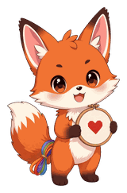

Hi, I'm Myke. I built Floss Fox as a small side project after seeing how often stitchers have DMC patterns but can only buy Anchor locally. I'm not a professional developer. I tested it with my girlfriend, who is a stitcher and kindly put up with a lot of questions about thread.
The DMC-to-Anchor pairings and colour values come from the Cyberstitchers conversion charts. Huge thanks to Cyberstitchers for maintaining them. Its colour swatches are DMC colours, so Floss Fox only shows chart-listed matches and doesn't compute colour-distance "alternates".
The shopping list can be built in Anchor, Sullivans (numbers from Sullivans' official DMC chart) or DMC. CXC is mentioned as a budget full-set option, but Floss Fox has no verified per-colour data for it. Metallic and variegated threads aren't substituted automatically. Prices are rough estimates checked October 10, 2026.
You can save a converted list as a project, mark each thread Have, Check or Buy, and keep a shopping list. Projects are stored only in this browser. They aren't synced or backed up for you, so download a backup now and then. Floss Fox never guesses how much thread you own: an unknown amount always stays in “Needs review”. Ticking “bought” is only shopping progress: a thread counts as ready only after you confirm how much actually arrived.
Colours on screen are approximate and every screen is different. Some DMC shades have no Anchor equivalent. Before buying, compare real skeins or a printed colour card.
Floss Fox works out what you need first, on its own. Store links never change your list, your amounts, your substitutions or what you own. If a "Where to buy your missing supplies" section appears, it only offers places to buy what is already on your list, and it says right beside the links: "Floss Fox may earn a commission if you buy through these links, at no extra cost to you." Not every link earns a commission. Retailers are listed alphabetically, never by how much they pay. A link that names an exact product (for example "View DMC 310 6-strand cotton at …") has been checked by hand; a "Browse" link goes to the retailer's floss range, where you check the exact color yourself. Floss Fox doesn't know prices or stock and never claims a price is the lowest. You can always shop anywhere: just print or copy your list. Clicking a link takes you to the store, which may set its own cookies (see Privacy).
Not affiliated with DMC or Anchor. Questions or corrections: open an issue on GitHub